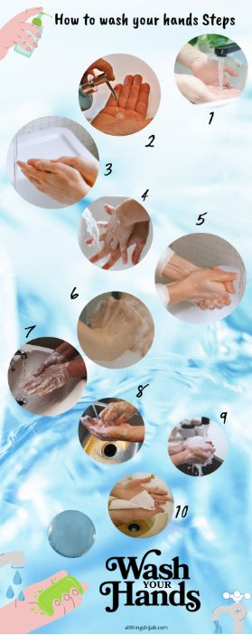
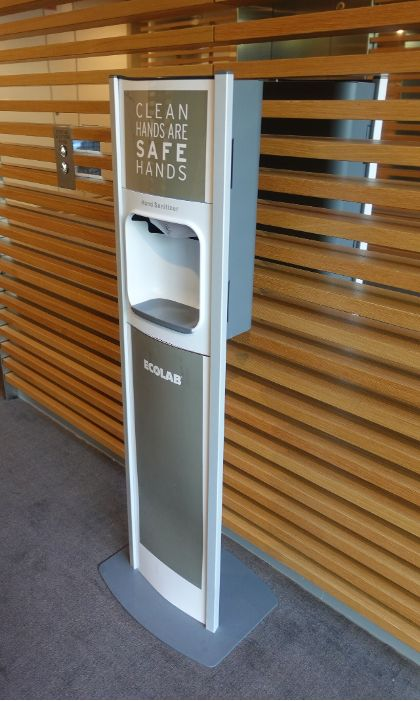
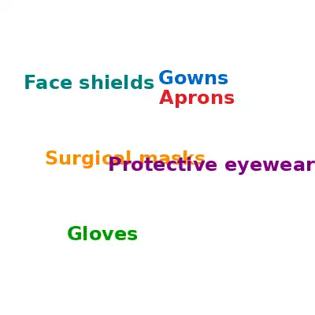
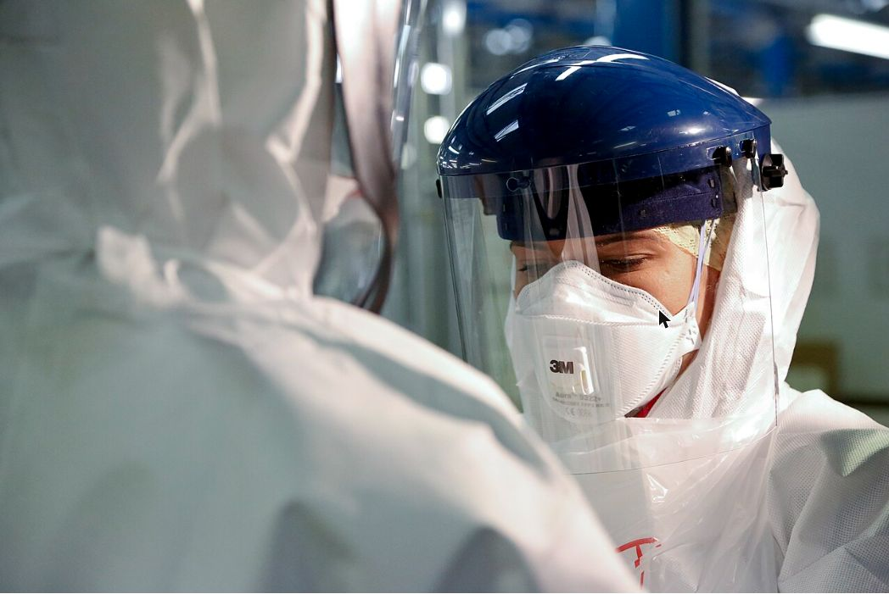
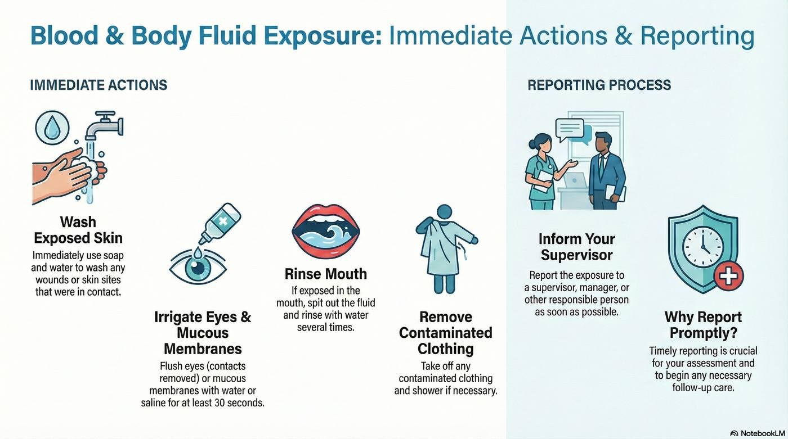

The habits you use with every person, every time: hands, clothing, PPE, spills, cleaning and linen.
In Lesson 1 you learned how Gerry the Germ travels. This lesson is about blocking him. Everything here is a standard precaution: something you do with every person, every time, whether or not you know they have an infection.
1 What are standard precautions?
Standard precautions are the basic safety steps for every person, every time. You do not wait to find out if someone has an infection. You assume anyone could.
Listen to the explanation
Click a circle to light it up.
NP6 S1 P1Hand hygiene: clean hands at the right moments.
NP6 S1 P2PPE: gloves, gowns, masks and eye protection when there is a risk.
NP6 S1 P3Cough and sneeze manners: cover, bin, clean your hands.
NP6 S1 P4Safe sharps: straight into the sharps container, never recapped.
NP6 S1 P5Cleaning: equipment and surfaces, the right solution at the right time.
NP6 S1 P6Linen and waste: handled so germs stay inside the bag.
NP6 S1 P7If a person is known to have an infection, extra steps are added. Those are called transmission-based precautions.
Hand hygiene means cleaning your hands with soap and water, or with alcohol-based hand rub. It is the single most effective way to stop infection spreading.
Listen to the explanation
NP6 S2 P1The main aim of hand hygiene is to reduce the spread of infection and to reduce antimicrobial resistance.
NP6 S2 P2It protects the person you support, you, and everyone else in the workplace.
NP6 S2 P3Hands are Gerry's favourite taxi. Clean hands take the taxi off the road.
5 Three types of hand hygiene, and which one for which task **
Not every task needs the same hand wash. There are three types.
Listen to the explanation
NP6 S5 P1Routine (social) hand hygiene: soap and water for 20 to 30 seconds, or alcohol-based hand rub. For everyday care.
NP6 S5 P2Clinical hand wash: soap and water for about 60 seconds. Before and after clinical tasks and after body fluid contact.
NP6 S5 P3Surgical hand wash: 2 to 5 minutes with antimicrobial soap, up to the elbows. Only before surgery.
NP6 S5 P4Removing general waste: routine hand rub. Using a computer: routine hand rub.
NP6 S5 P5Assisting a person with personal hygiene: routine hand WASH. Before food preparation: routine hand WASH.
NP6 S5 P6Changing a dressing: clinical. After exposure to body fluids: clinical.
NP6 S5 P7Before a surgical procedure: surgical.
Watch out Helping someone with personal hygiene (shower, toileting) needs a routine hand WASH with soap and water, not just a hand rub. Students get this one wrong most often.
Try itWhich hand hygiene for this task?
Tap a task, then tap the type of hand hygiene it needs.
The notes above will blur while you try. You can peek any time.
A routine hand wash takes 20 to 30 seconds. The steps are numbered 0 to 11, and step 0 is the one everyone forgets.
Listen to the explanation
NP6 S6 P10 Wet hands with water.
NP6 S6 P21 Apply enough soap to cover all hand surfaces.
NP6 S6 P32 Rub hands palm to palm.
NP6 S6 P43 Right palm over the back of the left hand (the dorsum) with fingers interlaced, then swap.
NP6 S6 P54 Palm to palm with fingers interlaced.
NP6 S6 P65 Backs of fingers to opposing palms with fingers interlocked.
NP6 S6 P76 Rotational rubbing of the left thumb clasped in the right palm, then swap.
NP6 S6 P87 Rotational rubbing, backwards and forwards, with clasped fingers of the right hand in the left palm, then swap.
NP6 S6 P98 Rinse hands with water.
NP6 S6 P109 Dry hands thoroughly with a single-use towel.
NP6 S6 P1110 Use the towel to turn off the tap.
NP6 S6 P1211 Your hands are now safe.

Watch: Hand-washing steps using the WHO technique (Johns Hopkins Medicine)
Watch out Number from 0 to 11, not 1 to 12. The two pairs students swap: step 3 (back of hand) comes before step 4 (palm to palm, fingers interlaced), and step 9 (dry) comes before step 10 (towel on the tap).
Try itPut the hand wash in order (0 to 11)
Drag or use the arrows. The first step is number 0.
The notes above will blur while you try. You can peek any time.
Alcohol-based hand rub (ABHR) is quick and kills most germs. But it does not work on everything.
Listen to the explanation

NP6 S7 P1Put the amount the manufacturer recommends onto dry hands.
NP6 S7 P2Rub hands together so the rub touches every surface: fingertips, thumbs and between the fingers.
NP6 S7 P3Keep rubbing until the rub has evaporated and your hands are dry. Do not wipe it off.
NP6 S7 P4Use soap and water instead when your hands look dirty or soiled.
NP6 S7 P5Use soap and water after contact with spore-forming germs such as C. difficile (a gut bug that causes diarrhoea). Alcohol does not kill the spores.
NP6 S7 P6Alcohol also works poorly against some tropical parasites and protozoan cysts. Soap and water wash them off.
Watch: Hand rubbing steps using the WHO technique (Johns Hopkins Medicine)
Cracked, dry skin is a doorway for germs. Healthy skin is part of infection control.
Keep your skin healthy
Use hand hygiene products that contain moisturiser or lotion.
Follow the hand hygiene guidelines at work and at home.
Dry gently. Rough paper towels irritate the skin.
Never put gloves on damp hands.
Do not double up: no hand rub straight after soap and water.
Treat skin irritation and cover any breaks in the skin.
Cuts, grazes and skin conditions
Cover every cut and graze with a waterproof dressing. Brightly coloured ones are easy to see if they fall off.
This stops germs getting in to you and stops germs getting out to the person.
If you have a skin condition (eczema, dermatitis), get it treated and tell your supervisor. Broken skin is a portal of entry.
Jewellery, watches, nails and polish
Watches, rings and other jewellery are strongly discouraged during care.
If you must wear a ring, a plain band only, and move it during hand hygiene so the skin under it gets cleaned.
In high-risk areas (operating theatres) no jewellery at all, not even a plain band.
No artificial nails, no nail polish. They hide germs.
Follow your workplace policy, including for body piercings.
Watch out For "three actions to maintain skin integrity", give skin care actions (moisturiser, dry gently, no gloves on damp hands). "Wash hands in warm water" is hand hygiene, not skin care.
11 Cleaning the environment: how often, and with what **
Cleaning is decided by risk. Things that are touched often and likely to be dirty are high risk and need more. Detergent cleans. Disinfectant kills. Sometimes you need both.
Listen to the explanation
Item and risk level
When to clean
Solution
Bed rails (high risk)
Daily and after discharge
Detergent + disinfectant (MRO risk)
Bedside table (medium risk)
Daily
Detergent + disinfectant
Computer and keyboard, fixed to a desk (medium risk)
Daily, or when visibly soiled
Manufacturer's recommendation
Hoist, manual handling (medium risk)
Contact points after each use
Detergent + disinfectant (MRO risk)
Blood pressure cuff (low risk)
After each use
Detergent
General horizontal surfaces in the person's room, e.g. ledges
Daily and after discharge
Detergent + disinfectant (MRO risk)
Chair (high risk)
Twice daily
Detergent
Microwave (low risk)
Daily
Detergent
Telephone (high risk)
Daily, and spot clean after use
Detergent
Toilet (medium risk)
Daily
Detergent + disinfectant
NP6 S11 P1High risk: touched often by many hands, likely to be contaminated. Bed rails, chairs, telephones, ledges in the room.
NP6 S11 P2Medium risk: less often touched but still in the person's environment. Bedside table, toilet, hoist, keyboard.
NP6 S11 P4Detergent removes dirt and most germs. Disinfectant kills the germs left behind. Where there is a risk of a multi-resistant organism (MRO), use detergent + disinfectant.
NP6 S11 P5A stricter schedule than the table (twice daily instead of daily) is fine. A looser one is not.
Watch out Check the solution column, not just the frequency. Bed rails, bedside table and toilet need detergent + disinfectant; detergent alone is wrong. The blood pressure cuff is cleaned after each use, not daily.
Try itFill the cleaning schedule
Choose when and with what for each item.
The notes above will blur while you try. You can peek any time.
12 Reprocessing equipment: the Spaulding categories **
Reprocessing means cleaning equipment so it is safe to use again. The Spaulding system sorts equipment into three categories by how it touches the body.
Listen to the explanation
NP6 S12 P1Critical: enters sterile tissue, a body cavity or the bloodstream (surgical instruments, needles). Clean thoroughly as soon as possible after use, then sterilise.
NP6 S12 P2Semi-critical: touches mucous membranes or broken skin (a respiratory mask, a thermometer probe). Clean thoroughly straight after use, then steam sterilise. If the item cannot take steam, use high-level chemical or thermal disinfection.
NP6 S12 P3Non-critical: touches intact skin only (blood pressure cuff, hoist sling, commode). Clean thoroughly with detergent. If it was used on a person on transmission-based precautions, disinfect after cleaning with a TGA-registered disinfectant.
PPE is personal protective equipment. Each item blocks one of Gerry's roads. Each card gives the purpose and two examples of when to use it.


Why does it matter that PPE is put on, worn and taken off correctly? Because PPE only works if it is a complete barrier. Done wrongly, it spreads germs from the PPE onto you, onto the environment and onto other people. The next slide shows the order.
Gloves
Purpose: protect both the person and you from germs carried on hands.
Use when: touching blood, body fluids or waste.
Use when: there is a risk of contact with blood or body fluids, for example a pad change or wound care.
Gloves are not a substitute for hand hygiene. Clean hands before and after.
Gowns and waterproof aprons
Purpose: protect your skin and your clothing from blood, body fluids and other infectious material.
Use when: close contact with a person, materials or equipment could contaminate your skin or uniform.
Use when: there is a risk of splashes of blood, body fluids, secretions or excretions, for example showering someone or emptying a catheter bag.
Face shields, goggles and protective eyewear
Purpose: reduce the risk of splashes or sprays of blood or body fluids reaching your eyes and face.
Use when: there is a chance of splashing or spattering, for example cleaning up blood or vomit.
Use when: a person is coughing hard during close care, or during a procedure that can spray.
Your own glasses are not eye protection. They leave the sides open.
Masks, and when you need a P2 or N95
Purpose: protect your nose and mouth from splashes, sprays and droplets.
Use when: there is a risk from airborne droplets, for example a person with a productive (wet) cough.
Use when: a person has an airborne or droplet-spread disease, such as influenza.
P2 or N95 respirator: a tighter mask that filters tiny particles. Needed when giving direct care in a high-risk COVID-19 zone or with airborne diseases like TB and measles.
Watch: Differences between N95, P2, KN95 and cloth masks (George Forgan-Smith)
14 Putting on, taking off, and throwing away PPE **
The order matters. Putting on goes from cleanest to dirtiest. Taking off removes the dirtiest item first, with hand hygiene in between.
Listen to the explanation
Putting on (1 to 5)
Hand hygiene
Gown
Mask
Eye protection
Gloves
Taking off (1 to 8)
Gloves
Hand hygiene
Gown
Hand hygiene
Eye protection
Hand hygiene
Mask
Hand hygiene
NP6 S14 P1Putting on (donning), 1 to 5: hand hygiene, gown, mask, protective eyewear or face shield, gloves.
NP6 S14 P2Taking off (doffing), 1 to 8: gloves, hand hygiene, gown, hand hygiene, protective eyewear or face shield, hand hygiene, mask, hand hygiene.
NP6 S14 P3Take gloves off without touching the outside. Roll the gown inwards. Handle eyewear by the headband. Take the mask off by the ties or loops, never the front.
NP6 S14 P4Disposal: soiled PPE goes into the infectious (clinical) waste container, following your local council rules, the facility's waste procedures and workplace policy.
Watch out Taking off PPE starts with gloves, not hand hygiene, and ends with hand hygiene after the mask. A paper that starts with hand hygiene has every step shifted by one.
Try itTaking off PPE: put the 8 steps in order
Drag or use the arrows. Remember what comes off first.
The notes above will blur while you try. You can peek any time.
Try itPutting on PPE: put the 5 steps in order
Clean to dirty.
The notes above will blur while you try. You can peek any time.
A colleague cuts themselves badly. While you help, some of their blood splashes your face. What now? The Queensland Health guideline gives the steps.
Listen to the explanation
NP6 S15 P1Skin: wash wounds and any skin that touched blood or body fluid with soap and water.
NP6 S15 P2Eyes and mucous membranes: flush with water or saline for at least 30 seconds. Take contact lenses out first. Keep the eyes open while rinsing.
NP6 S15 P3Mouth:spit the fluid out and rinse several times with water.
NP6 S15 P4Clothing: take off contaminated clothing and shower if needed.
NP6 S15 P5Report it: tell your supervisor, manager or other responsible person as soon as possible, so you can be assessed and get follow-up (blood tests, vaccination, treatment) in time.
NP6 S15 P6PPE you should have worn to help a bleeding colleague: gown, gloves, mask and goggles (eye protection), because the risk is contact and droplet.

Watch out This question has two halves: four immediate actions and the reporting process. Many students write four good actions and stop. Always add: report to your supervisor or manager straight away so assessment and follow-up can happen.
Try itFirst aid or reporting?
Sort each step into the right part of the answer.
The notes above will blur while you try. You can peek any time.
Melissa works at a lifestyle centre. A visitor who had been coughing vomits at the entrance. Vomit is an infection risk, so Melissa cleans it up using the spill kit.
Listen to the explanation
NP6 S16 P11 Select and put on appropriate PPE (gloves, apron, eye protection if there is splash risk).
NP6 S16 P22 Cover the spill with an absorbent clumping agent and let it absorb.
NP6 S16 P33 Use the disposable scraper and pan to scoop up the absorbent material and any fluid.
NP6 S16 P44 Place everything contaminated into a leak-proof (impervious) container or plastic bag.
NP6 S16 P55Discard the contaminated materials in the clinical waste.
NP6 S16 P66Mop the area with detergent solution.
NP6 S16 P77Wipe the area with sodium hypochlorite (bleach solution) and let it dry.
NP6 S16 P88Perform hand hygiene.
Try itClean up the spill: order the 8 steps
Drag or use the arrows.
The notes above will blur while you try. You can peek any time.
Aseptic means free of germs. Aseptic technique is the way a procedure, like a wound dressing, is done so no germs reach the person. It has five principles.
Listen to the explanation
NP6 S17 P11 Sequencing: do things in the right order. Risk assess, prepare, do the procedure, then the after steps: clean up, hand over and document.
NP6 S17 P22 Environmental control: before you start, remove nearby risks that could spread germs. No bed making or commode use close by. Close windows if it is dusty.
NP6 S17 P33 Hand hygiene: clean hands before the procedure, and again after, or after any contact with body fluids.
NP6 S17 P44 Maintaining the aseptic field: clean or disinfect the equipment and the person's skin first, set up a clean field, use sterile equipment, protect the key parts and key sites, and use a non-touch technique.
NP6 S17 P55 PPE: choose and use the correct sterile and non-sterile PPE for the task.